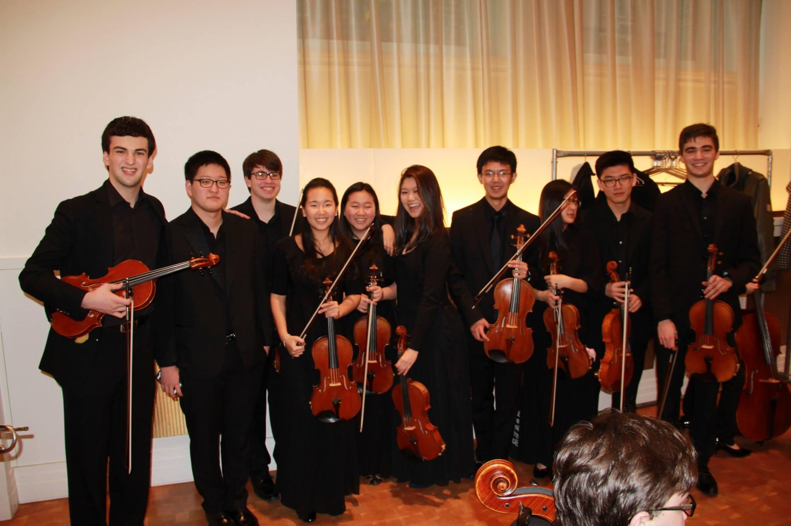
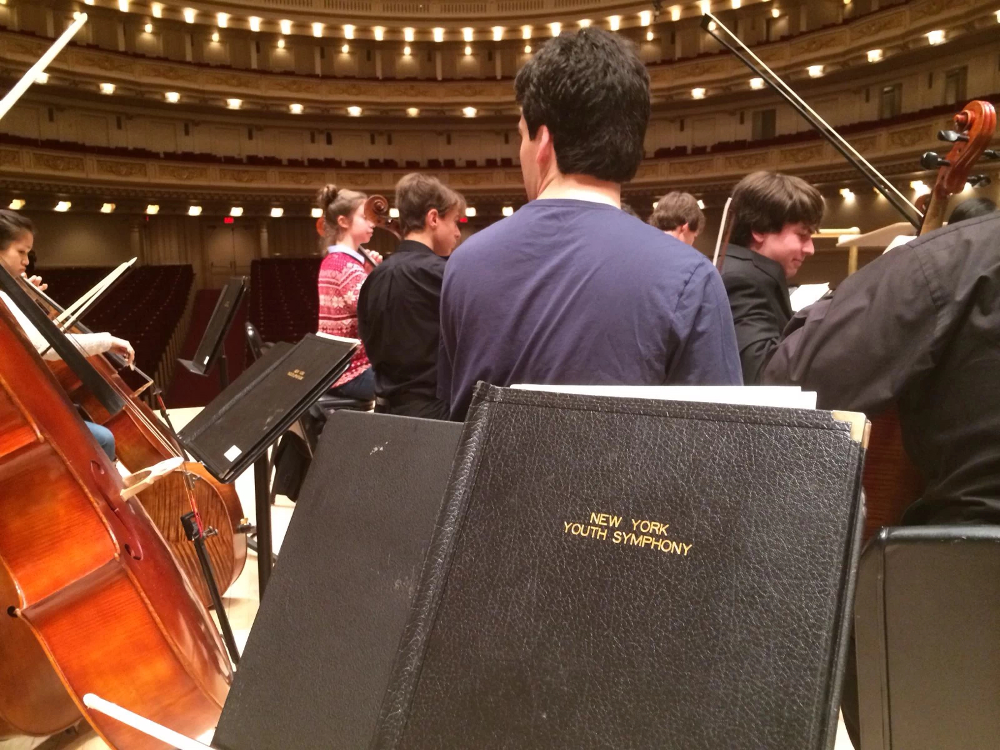
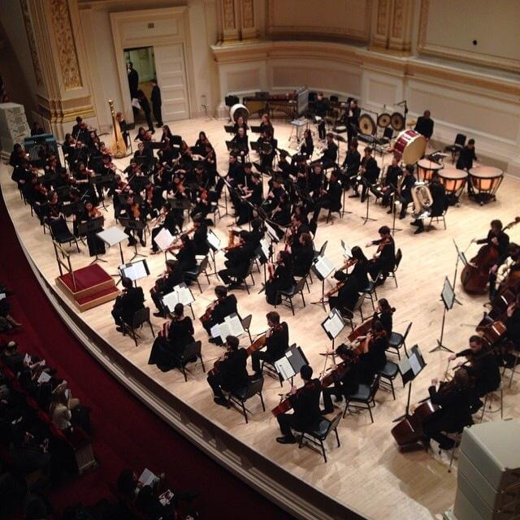
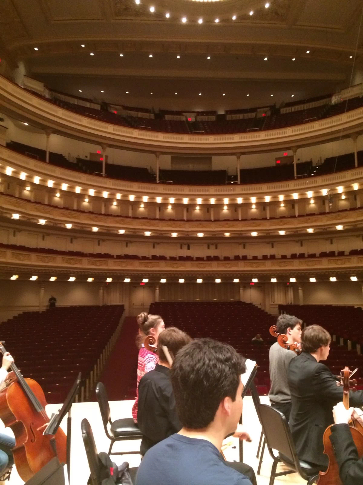

I am also a musician
- Juilliard Pre-college Principal Violist
- New York Youth Symphony Violist

New York Youth Symphony Viola Section group photo after performing at Carnegie Hall.

New York Youth Symphony rehearsal at Carnegie Hall - Stern Auditorium / Perelman Stage.

New York Youth Symphony proforming at Carnegie Hall - Stern Auditorium / Perelman Stage

New York Youth Symphony rehearsal at Carnegie Hall - Stern Auditorium / Perelman Stage.